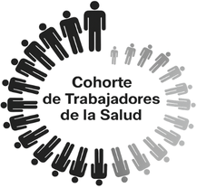

La ciencia avanzacuando conectamos.
Tu punto de conexión
Inicia sesión en tu espacio de trabajo.
Ayuda de acceso
Contacta al equipo de la Cohorte para solicitar orientación sobre tu acceso institucional.